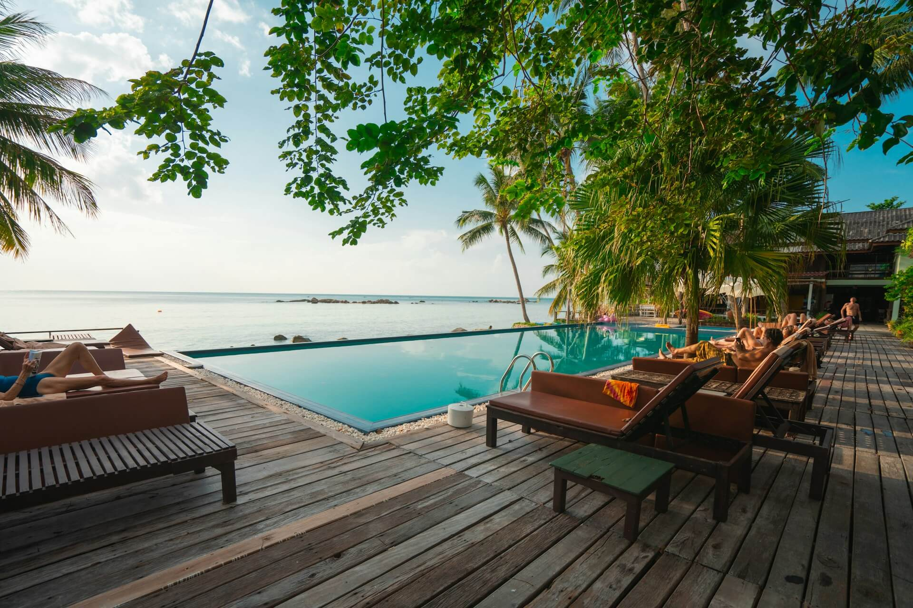

Car camping at Poniente Springs isn't about roughing it—it's about driving straight up to your campsite, pitching a tent under mature fruit trees, and waking up to fresh highland air.
As urban life grows busier, more families and outdoor enthusiasts are discovering the simple joy of vehicle-supported camping. With your trunk packed with cozy bedding, portable stoves, and picnic gear, setting up camp in Amadeo becomes effortless.
Camping under the canopy
Our designated camping spots are surrounded by lush shade, protecting your tent setup from the midday heat. The mountain breeze blowing down from Tagaytay keeps evening temperatures crisp and pleasant year-round.
After a day spent dipping in the natural mineral spring pools, campers gather around portable outdoor tables for griddled meals, local Amadeo coffee, and quiet conversations under the stars.
Tips for a smooth camp stay
Whether you're bringing an awning tent, an overland rig, or a basic ground tent, here is what makes for an ideal overnight stay at Poniente Springs:
Pack extra layers for the late night breeze, bring reusable camp cookware, and take advantage of our picnic shed areas for meal prep. Most importantly, follow leave-no-trace principles so the grounds stay pristine for the next camper.